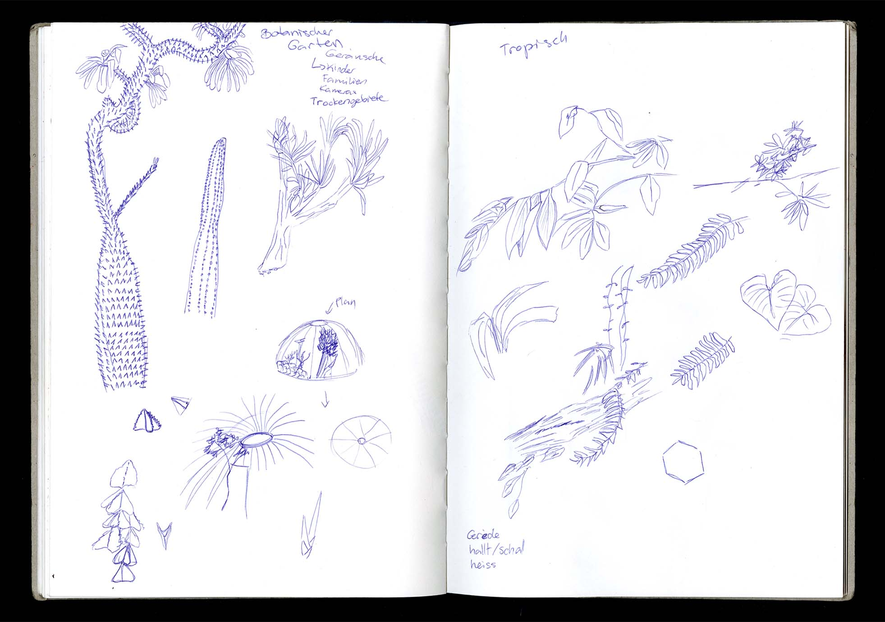
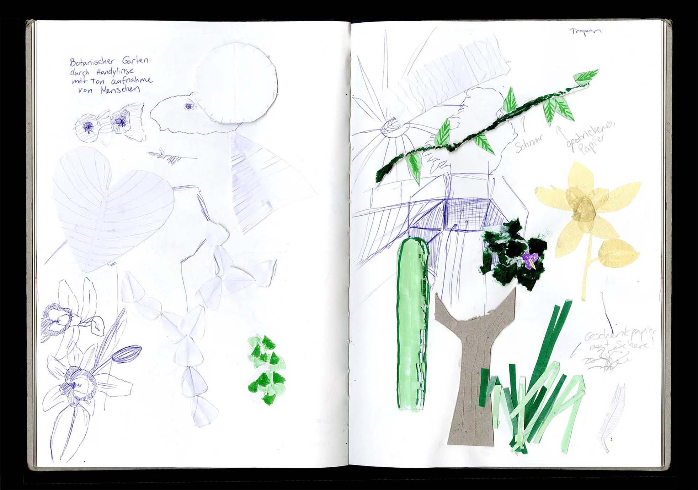
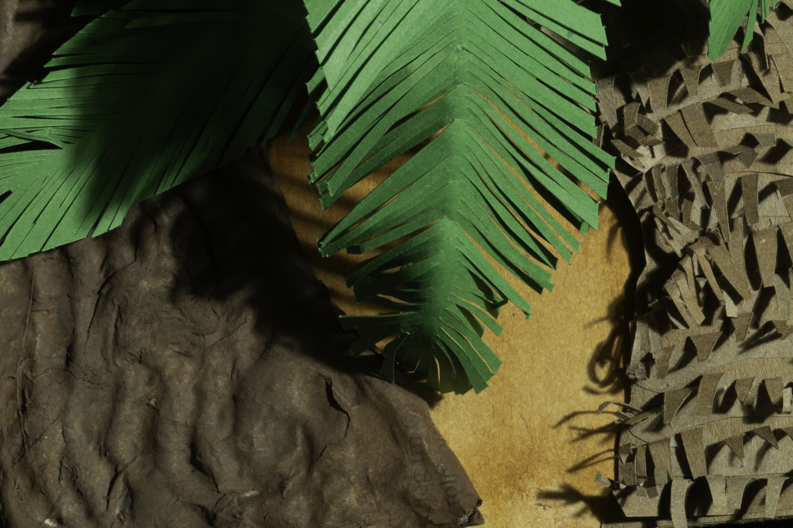
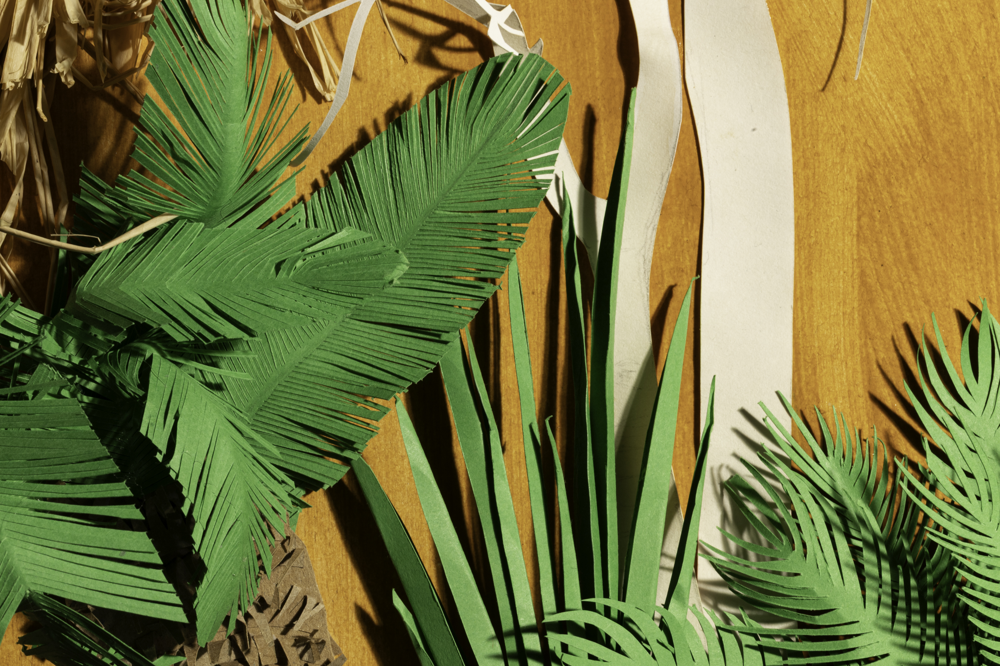
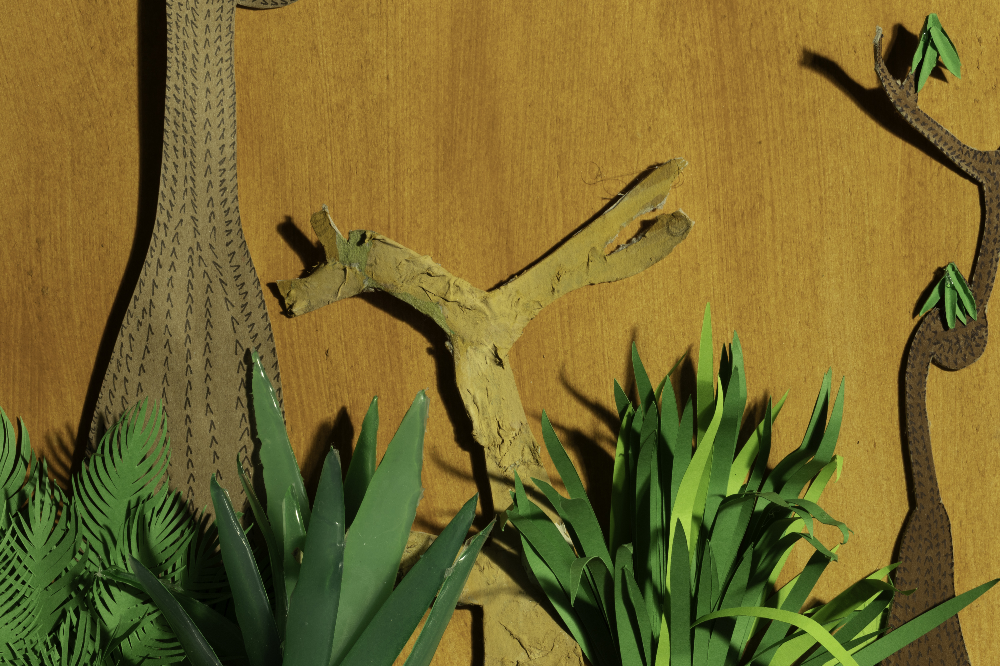

Analog
Fachklasse Grafik
2024
DAS SCHWINDENDE PARADIES
Während die Natur zunehmend verschwindet, wächst die Sehnsucht, sie künstlich nachzubilden. Das Werk zeigt einen künstlichen botanischen Garten aus einfachen Materialien wie Papier und Plastik – bewusst als Nachbildung gestaltet und mitten in der Stadt platziert. In Anlehnung an botanische Gärten, die Pflanzen aus aller Welt sammeln und ausstellen, erinnert diese Arbeit an das, was mehr und mehr verloren geht...




